霊台山健徳寺地母廟/雲林縣
霊台山健徳寺地母廟/雲林縣
台湾中部の地方都市斗六の数キロ南にある健徳寺には特徴的過ぎる地母廟がある。
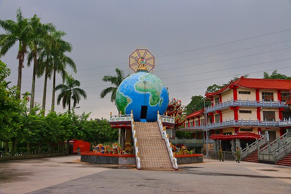
はい、一目瞭然ですね。
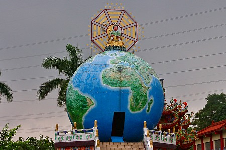
地球の上に神様が鎮座している。
これは地母至尊とか地母娘娘（にゃんにゃん）といい、要するに地球を生み出したグレーテストマザーなのである。
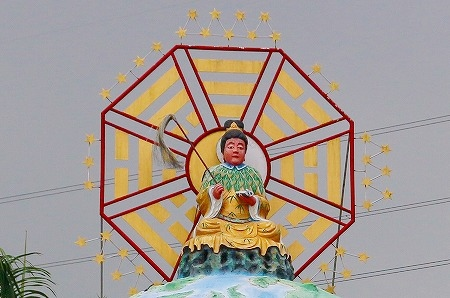
光背かと思ったら八卦だった。その周囲の星の数は…よく判りません。
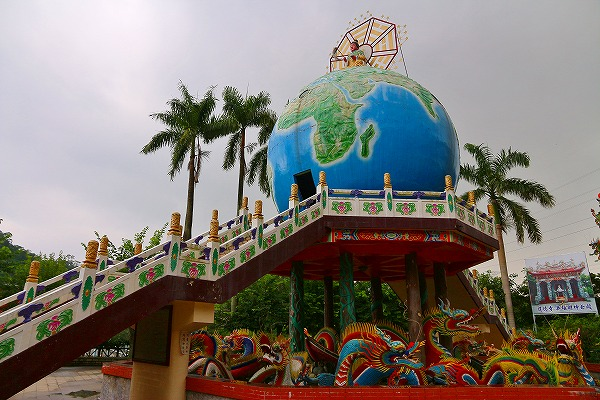
碑文によればこの奇天烈な地母廟が出来たのは民国67年、つまり西暦1978年である。
日本に続きアメリカとも国交を断絶せざるを得なくなり、台湾が世界の中で孤立感を深めていったであろう1970年代に出現した地母廟。
台湾の人々はこのユニバースな神像をどんな思いで捉えたのであろうか。
地母廟の隣には本堂がある。
その足元にもカラフルな神々が並んでいる。
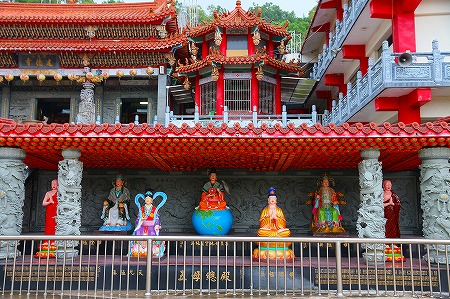
その真ん中にも地母至尊像が。
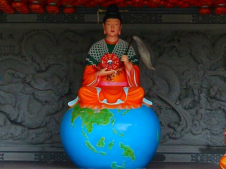
こちらも地球の上に鎮座しており、どっかで見たことがあるかと思ったら…
バランスボールみたいですね。
地球の大きさはともかく、この地母至尊像は道教世界ではたま〜に見かけることがある。
そのいずれもが筆のような御幣と風水盤のようなものを持っている。
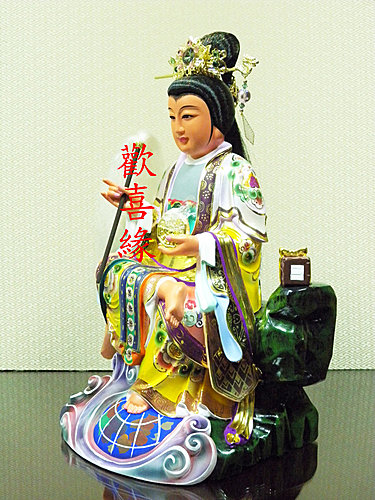
こんな感じ
そして足元には控えめに地球がある場合が多い。あくまでも控えめに、ね。
本堂でお参り。
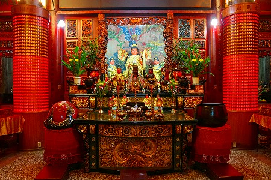
本尊はもちろん地母至尊。
気が付いたら外が物凄い豪雨に！
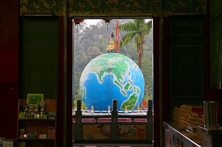
この日は台風上陸直前だったので天候が不安定、というか曇天〜豪雨〜曇天〜豪雨の繰り返しだった。
雨がひどく外にも出られず、本堂の軒下でうすぼんやりと地母廟を眺める。
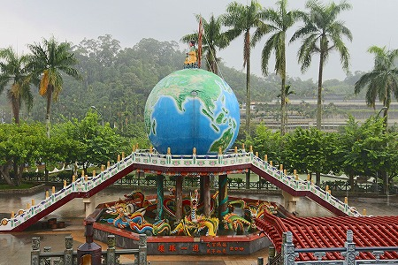
それにしても不思議な神様だ。
いや、地球儀に乗っている姿ではなく、通常の↓姿が。
というのも足元にある地球の姿が認識されたのって結構最近なんだよねー。
「地球は青かった」でおなじみのガガーリンの世界初の有人宇宙飛行が1961年。
さらに世界で初めて宇宙空間から地球の姿をカラー撮影したのが1968年。
人類が地球の正確な外観を得たのはそれ以降ということになる。
つまり地母至尊が現在の姿になったのはたかだか50年前、ということになる。
もちろん地母至尊の存在はそれ以前からあったのだろうが、少なくとも足元の地球が取り入れられたのは精々半世紀なのだ。
この世の根源を生み出した重要な神像の割には案外あっさりとモデルチェンジするものなんですね。
まあ、その辺の臨機応変っぷりが道教のチャームポイントなわけでして。
しかも考えてみたらここの地母廟が建設されたのだって人類が地球の姿を認識してからほんの10年程度しか経ってないじゃないか。
当時最先端の概念であった「青い地球」。それをいち早く取り入れた画期的な廟宇建築といえよう。
…チョット考えすぎですかねえ。
ようやく小降りになったので地母廟に接近する。
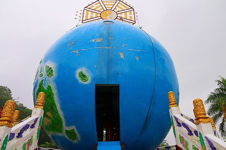
階段を上り、地球儀の裏側から入る。地球内部への入り口はニュージーランド辺りでした。
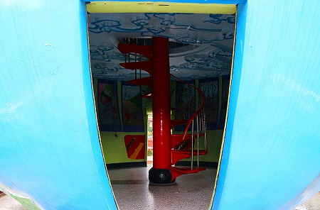
地球の内部は何と二階建てだった！
中央に真っ赤な螺旋階段。
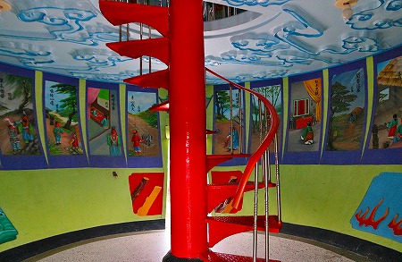
階段を取り囲むように壁面には二十四孝の絵が描かれていた。
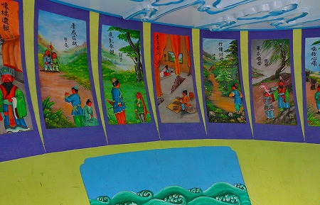
もう当サイトでは何度も紹介しているので熱心な読者貴兄におかれましてはご存知の方も多かろうと思うが、中国に伝わる親孝行物語ベスト24である。
親ために糞を食べたり、進んで蚊に刺されたり、鹿のふりをして殺されそうになったりとかなりアブナ目な人達が次から次へと登場する。
私のイチオシは何といってもこちらの唐婦人。
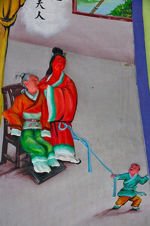
歯のない姑に自分の母乳を与えるという衝撃のシーン。
傍らで小僧が「母ちゃん、俺にもおっぱいけろ！」と引っ張っているのもお約束の図柄。
階段を登って2階へ。
儒道仏界のスター達が勢ぞろい。
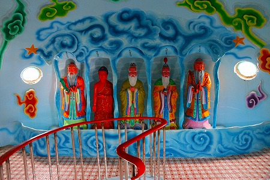
こちらは天上界的なものをイメージしているのだろうか。
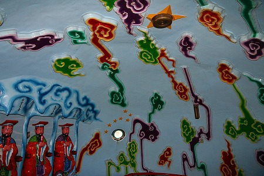
微妙なデザインの雲が天井いっぱいに広がっていた。
色はカラフルだがフォルムは「暗雲」という感じ。
ちなみに推定気温35度、推定湿度90パーセント。ほとんどサウナでしたよ…。
逃げ出すように地母廟を飛び出すと雨は止んでいた。
地母廟の地球儀の真下には九龍池という池があり、カラフルな龍がのたうちまわっていた。
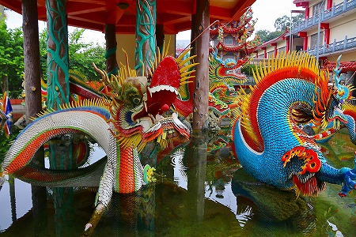
山門付近にも色とりどりのレリーフがあり、ぼんやり眺めていると…
…ここにもいらっしゃいました。姑に母乳を与えるストロングスタイルな嫁さん、唐婦人。
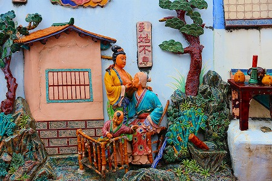
頑張れ！唐婦人！
負けるな！唐婦人！
子供にもおっぱいやれよ！唐婦人！
…などと思ってたら、またしても急な豪雨！
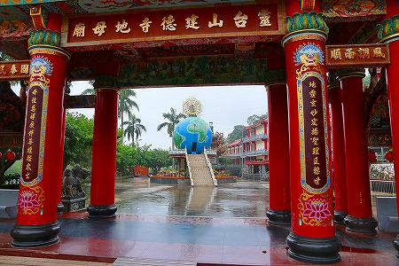
アカン！撤収じゃ！
珍寺大道場 HOME